Usage
All examples below assume the following setup:
using PlottingToolsHEP, FHist, CairoMakie, Random
Random.seed!(42)
h1 = Hist1D(randn(10_000); binedges = -6:0.1:6)
h2 = Hist1D(2 .* randn(10_000); binedges = -6:0.1:6)
h3 = Hist1D(randn(10_000) .+ 1; binedges = -6:0.1:6)
h4 = Hist2D((randn(10_000), randn(10_000)))ATLAS Theme
Set the global ATLAS publication-style theme before plotting:
set_ATLAS_theme()This configures Nimbus/TeXGyreHeros fonts, inward tick marks with mirroring, minor ticks, and disables grid lines — matching the ATLAS experiment's publication guidelines.
To get the Theme object without setting it globally:
theme = AtlasTheme()
with_theme(theme) do
# your plots here
endColor palettes
Two named color palettes are available:
ATLAS_colors— 9-color palette matching the ATLAS collaboration stylegaudi_colors— 8-color palette inspired by the Gaudi framework
Both are plain Vector{String} of hex codes and can be passed directly to any color keyword argument in Makie or to the color keyword in multi_plot.
HEPPlotOptions
HEPPlotOptions is a keyword struct that bundles common axis and labelling options. It is passed via the options keyword to every plotting function.
opts = HEPPlotOptions(
ATLAS_label = "Internal", # text placed after "ATLAS"; set nothing to suppress
energy = 13.6, # √s in TeV shown in the label
limits = ((-6, 6), (0, 1200)),
yscale = identity, # or log10 for a log y-axis
xticks = -6:2:6,
ATLAS_label_offset = (30, -20), # pixel offset from the top-left corner
)All fields have sensible defaults, so HEPPlotOptions() gives a plain, unlabelled axis.
Plotting a single histogram — plot_hist
plot_hist accepts a Hist1D or Hist2D and returns a Figure.
1-D histogram
fig = plot_hist(h1, "My Title", L"$p_T$ [GeV]", "Events";
normalize_hist = false,
options = HEPPlotOptions(
ATLAS_label = "Internal",
limits = ((-6, 6), (0, 1200)),
energy = 13.6,
))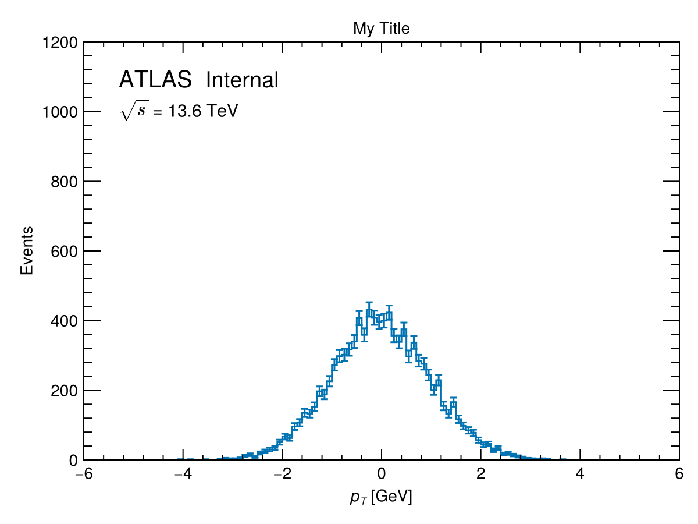
Normalize to unit area with normalize_hist = true. Supply a label string to activate a legend:
fig = plot_hist(h1, "", L"$p_T$ [GeV]", "Events / 0.1 GeV";
label = "Signal MC",
normalize_hist = true)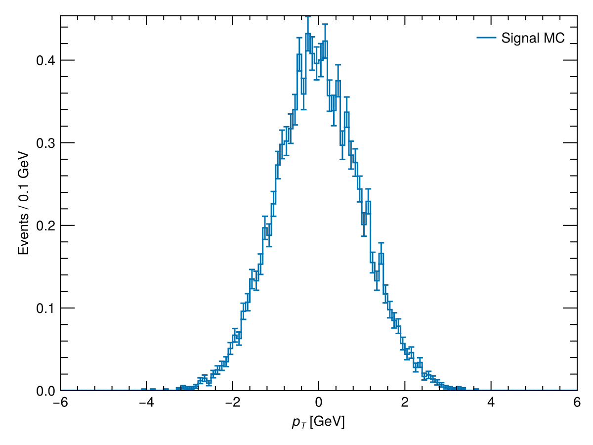
2-D histogram (heatmap)
fig = plot_hist(h4, "", L"$\eta$", L"$\phi$";
colorbar_label = "Events",
colorscale = identity,
colorrange = Makie.automatic)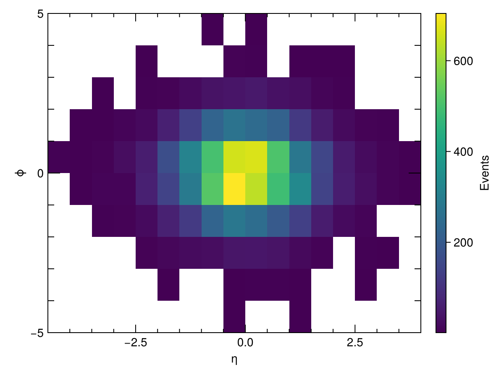
Specify explicit colorbar tick positions with colticks:
fig = plot_hist(h4, "", L"$\eta$", L"$\phi$";
colorbar_label = "Events",
colticks = 0:200:1000)Overlaying multiple histograms — multi_plot
multi_plot draws any number of histograms on one axis. It supports stacking, signal overlays, data scatter points, and lower sub-panels.
Basic overlay
fig = multi_plot(
[h1, h2, h3], "", L"$p_T$ [GeV]", "Events",
["Sample A", "Sample B", "Sample C"];
options = HEPPlotOptions(ATLAS_label = "Internal"),
)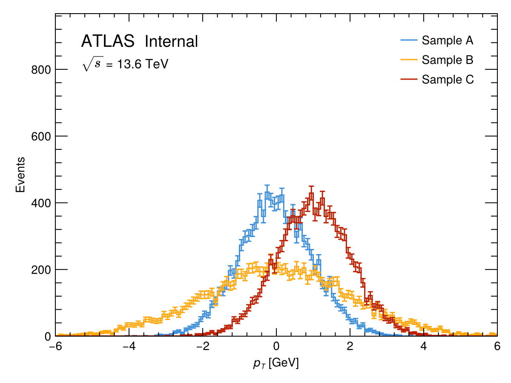
Stacked histogram
fig = multi_plot(
[h1, h2, h3], "", L"$p_T$ [GeV]", "Events",
["bkg 1", "bkg 2", "bkg 3"];
stack = true,
options = HEPPlotOptions(ATLAS_label = "Internal"),
)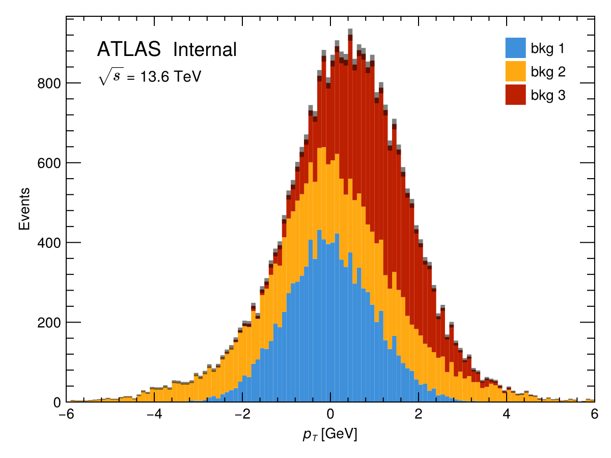
Normalization
Control normalization with normalize_hists:
""(default) — no normalization"individual"— each histogram normalized to unit area"total"— all histograms scaled to a common integral
fig = multi_plot(
[h1, h2, h3], "", L"$p_T$ [GeV]", "Normalized",
["h1", "h2", "h3"];
normalize_hists = "individual",
)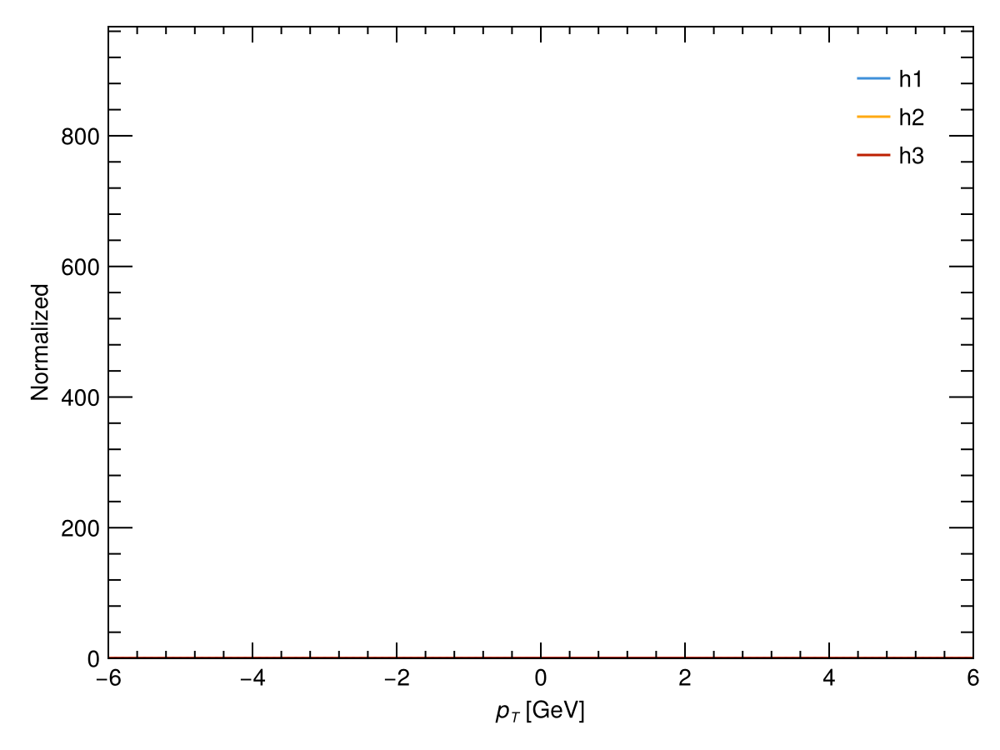
Data / MC comparison with ratio panel
Pass data_hist and set lower_panel = :ratio to draw a ratio sub-panel below the main axis:
fig = multi_plot(
[h2, h3], "", L"$p_T$ [GeV]", "Events", ["MC 1", "MC 2"];
data_hist = h1,
data_label = "Data",
lower_panel = :ratio,
ratio_label = "Data / MC",
normalize_hists = "total",
options = HEPPlotOptions(ATLAS_label = "Internal"),
)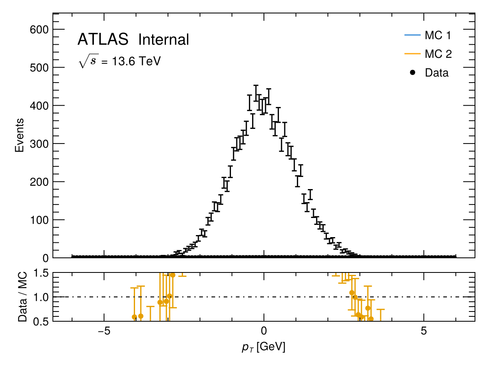
Signal + background with S/√B panel
fig = multi_plot(
[h2, h3], "", L"$p_T$ [GeV]", "Events", ["bkg 1", "bkg 2"];
signal_hists = [h1],
signal_labels = ["Signal"],
lower_panel = :s_sqrt_b,
legend_position = :side,
options = HEPPlotOptions(ATLAS_label = "Internal"),
)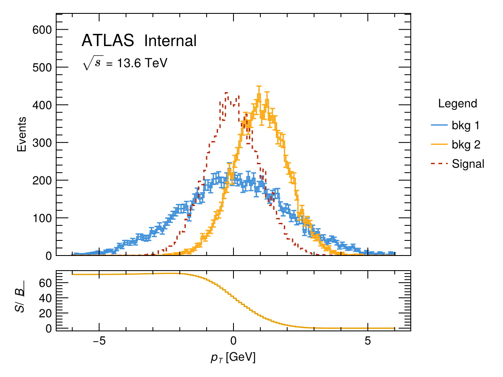
Comparing two histograms — plot_comparison
plot_comparison is a convenience wrapper around multi_plot that overlays two histograms and draws a ratio panel. The second histogram appears as the "data" over the first "MC".
fig = plot_comparison(
h1, h2,
"", L"$\eta$", "Events",
"Sample A", "Sample B", "A / B";
normalize_hists = true,
options = HEPPlotOptions(ATLAS_label = "Internal", energy = 14),
)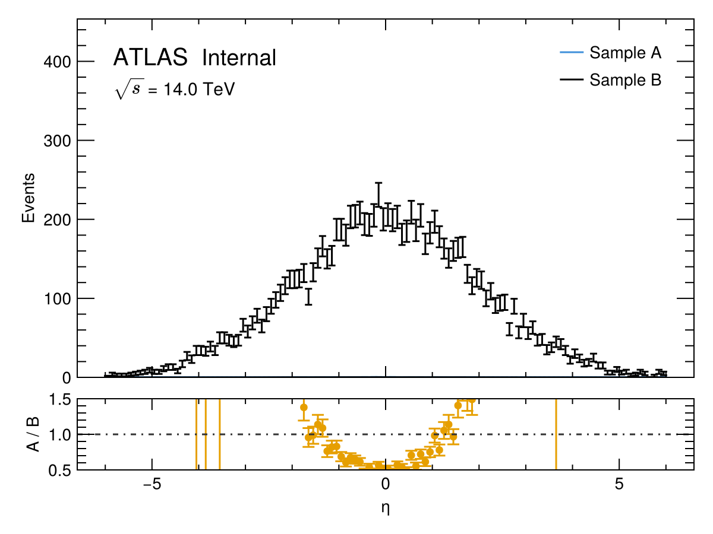
Set plot_as_data = [false, true] to draw the second histogram as scatter points:
fig = plot_comparison(
h1, h2,
"", L"$\eta$", "Events",
"MC", "Data", "Data / MC";
plot_as_data = [false, true],
normalize_hists = false,
options = HEPPlotOptions(ATLAS_label = "Preliminary", energy = 13.6),
)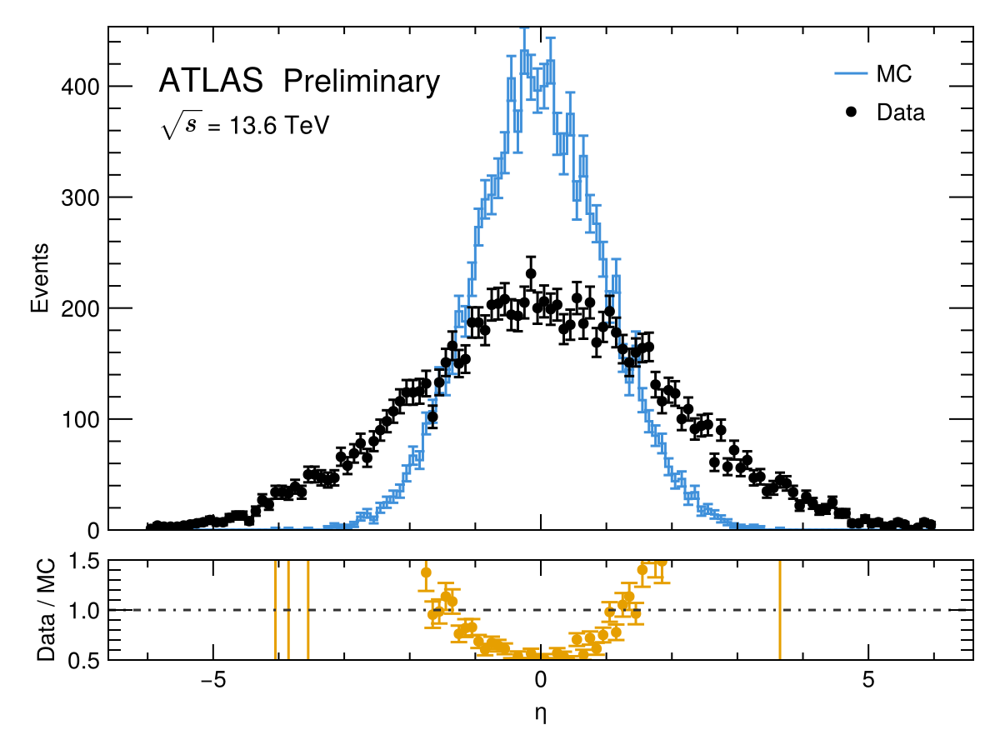
Signal vs. background — plot_signal_vs_background
plot_signal_vs_background is another convenience wrapper around multi_plot. It overlays signal histograms (dashed lines) on background histograms, with an optional cumulative S/√B significance panel and a side legend.
fig = plot_signal_vs_background(
[h1], # signal histograms
[h2, h3], # background histograms
"", L"$p_T$ [GeV]", "Events",
["Signal"],
["bkg 1", "bkg 2"];
stack = true,
plot_s_sqrt_b = true,
options = HEPPlotOptions(ATLAS_label = "Simulation"),
)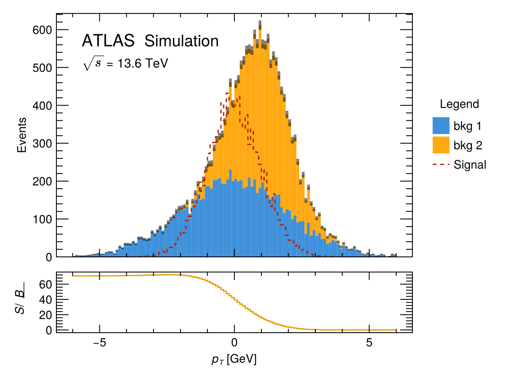
Set plot_s_sqrt_b = false to suppress the S/√B sub-panel.
Event display — event_display
event_display draws a 2-D (η, ϕ) event display. Every physics object must expose eta() and phi() from LorentzVectorHEP.
using LorentzVectorHEP
jets = [LorentzVector(50.0, 1.0, 0.5, 0.0)]
largeR = [LorentzVector(200.0, 0.2, 2.5, 0.0)]
leptons = [LorentzVector(40.0, -1.2, -1.0, 0.0)]
fig = event_display(jets, largeR, leptons;
η_range = -2.5:0.5:2.5,
ϕ_range = -3.15:0.45:3.15,
jet_R = 0.4,
largeR_jet_R = 1.0,
element_labels = ["Leptons", "Large-R Jets", "Jets"])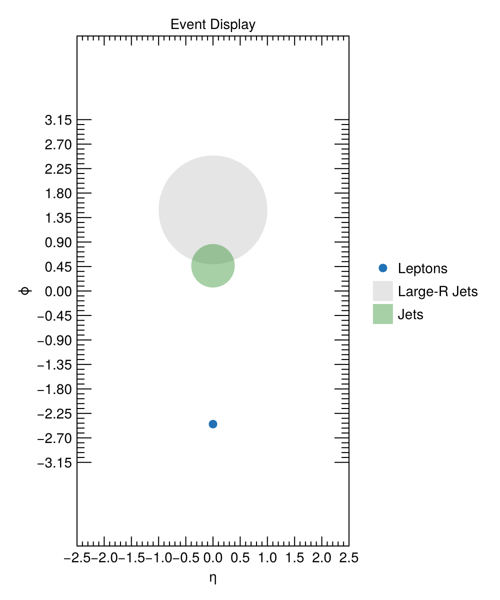
Jets and large-R jets are drawn as circles of radius jet_R and largeR_jet_R in (η, ϕ) space. Leptons are drawn as scatter points.
Adding an ATLAS label manually — add_ATLAS_internal!
For custom figures where you manage the Axis yourself, call add_ATLAS_internal! directly:
fig = Figure()
ax = Axis(fig[1, 1]; xlabel = L"$p_T$ [GeV]", ylabel = "Events")
stephist!(ax, h1)
add_ATLAS_internal!(ax, "Internal"; offset = (30, -20), fontsize = 20, energy = 13.6)
fig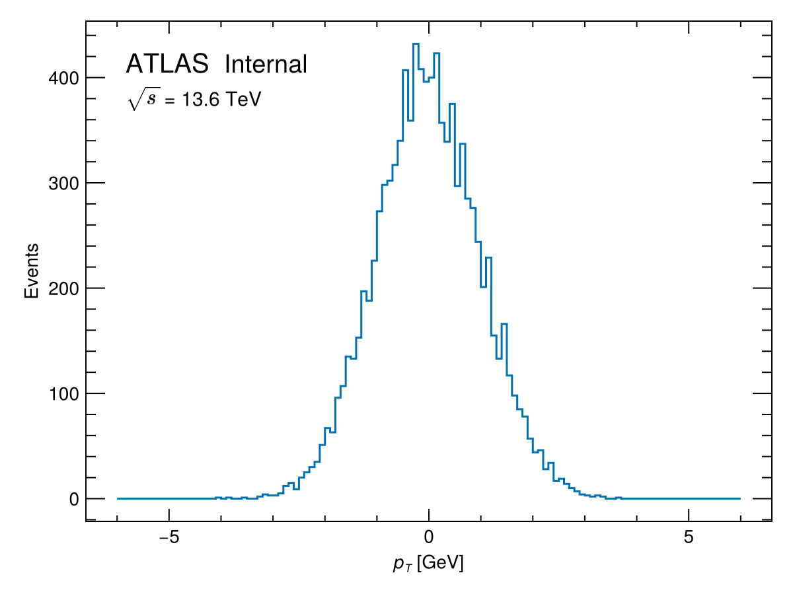
The first positional argument after ax is the secondary descriptor placed after the italic "ATLAS" text, e.g. "Internal", "Simulation", or "Preliminary".